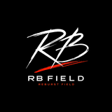

地域密着型フードフェスを起点に、地域ににぎわいと交流を生み出す
地域密着型イベントの企画・運営を通じて、オンライン時代に欠けている「リアルな交流」と「地域の活力」を創出します。
デジタル化が進む現代だからこそ、五感で楽しむリアルな体験を重視。地域の人々が集い、顔を合わせる「場」を設計します。
地元の飲食店・生産者・事業者と深く連携し、地域の魅力を再発見。地産地消の促進と持続可能な経済活性化に寄与します。
子どもから大人まで安心して楽しめる運営管理を徹底。誰もが主役になれるイベントを通じて、地域の絆を深めます。
イベント企画・運営
地域住民・地元事業者
RB FIELDを起点に4つのステークホルダーが価値を循環させるネットワークを構築。地域のポテンシャルを最大限に引き出す、持続可能なビジネスモデルを推進します。
地域経済の活性化と魅力の再発見
持続可能なコミュニティの維持
実効性の高い地域貢献（CSR）
親和性の高い層へのブランド露出
販路拡大と新たな顧客接点の創出
地元住民とのダイレクトな交流
対面ならではの「食」の感動体験
地域への愛着と幸福度の向上
安定的な運営基盤の構築
出店者と成果を共創する
企業の想いを形にするPR枠
テストマーケティングを通じて実績と信用を構築し、2027年4月の法人化を戦略的に目指します。
第1回〜第3回 開催期間
2027年4月1日 目標
メリット 低コスト・低リスク
設立費用や維持コストを抑えられる。代表（石川）が赤字を柔軟に受け入れ可能。
デメリット 信用・資金調達の制約
協賛企業の獲得が法人に比べ困難。対外的な社会的信用の構築に時間を要する。
最初から法人化せず、まず個人事業主として3回のテストを実施するのは、「実地データに基づいた事業検証」と「コスト抑制」を両立させるためです。この期間に確かな開催実績（動員・売上・地域連携）を作ることで、法人化のタイミングで最大限の信用力を発揮できます。
第1回〜第3回のテストマーケティング期間における収益目標。1回あたりの営業利益50万円を必達とし、利益率10％を想定した売上500万円の達成を最優先課題として事業を推進します。
目標営業利益 / 回
テストマーケティング時の方針
初期フェーズでは「実績作り」と「信頼獲得」を最優先とし、利益率10%を前提とした運営を行います。目標売上高：500万円をKPIとして設定し、集客と出店管理を徹底します。
| 想定利益率 | 必要売上高 | 営業利益（固定） |
|---|---|---|
| 10%（計画基準） | 500万円 | 50万円 |
| 15% | 333万円 | 50万円 |
| 20% | 250万円 | 50万円 |
利益率
第1回は「テスト付きの種まきイベント」として、実地データの収集と地域連携の基盤構築を最優先事項とする。
「テスト付きの種まきイベント」低コスト・低リスクでの実績作りを重視。2回目以降のスケールに向けた「仲間づくり」のフェーズ。
500万円
50万円
売上目標500万円・営業利益50万円の達成に向けた、20〜25店舗規模のフードフェス収支シミュレーションです。
| 出店料（固定） | 1,800,000円 |
| 売上歩合（15%想定） | 1,500,000円 |
| 協賛金（小口積み上げ） | 1,200,000円 |
| その他収入 | 500,000円 |
| 収入合計 | 5,000,000円 |
| 会場費 | 900,000円 |
| 保険（イベント保険等） | 150,000円 |
| 広告宣伝費 | 800,000円 |
| スタッフ人件費 | 1,000,000円 |
| 設営・撤去費（機材含む） | 1,100,000円 |
| その他雑費 | 550,000円 |
| 支出合計 | 4,500,000円 |
■ 規模：20〜25店舗の飲食店・事業者が出店 ■ 歩合：各店売上の15%を徴収するモデル ■ 協賛：1〜10万円の複数プランによる地域企業協賛
第1回を「種まき」と位置づけ、パートナー企業と共にイベントを育てていくための柔軟な協賛枠と誠実な交渉スタイルを確立します。
| プラン名 | 協賛金額 | 特典内容・露出媒体 |
|---|---|---|
| ブロンズ | 10,000円 | チラシへのロゴ掲載／会場内掲示板へのロゴ掲載 |
| シルバー | 30,000円 | 1万円枠の全特典／公式SNSでの紹介（1回） |
| ゴールド | 50,000円 | 3万円枠の全特典／メイン会場へのバナー設置／MCによる会場内読み上げ（数回） |
| プラチナ | 100,000円 | 5万円枠の全特典／ステージまたはイベントネーミング権に近い扱い（例：「〇〇フェス presented by △△」） |
第1回はテスト付きの"種まきイベント"です。「まずは実績作りの第一歩として」
来場者保証はなし。その分、協賛金は少額設定です。「参画しやすい価格にしました」
2回目以降、規模を拡大。一緒に育ててほしいです。「長期的なパートナーとして」
テストマーケティングの成果を基盤に、自主企画と受託案件の二軸で「地域に根ざした持続的なイベント会社」への成長を目指します。
年2〜5回
年2〜5回
単発開催で終わらせない。地域で継続的に愛される「場」を共創します。
第1回開催の成功に向け、収益構造の確立と地域ステークホルダーとの信頼関係構築を最優先事項として進めます。